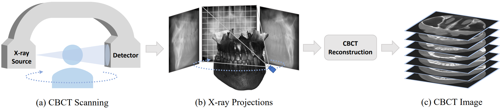
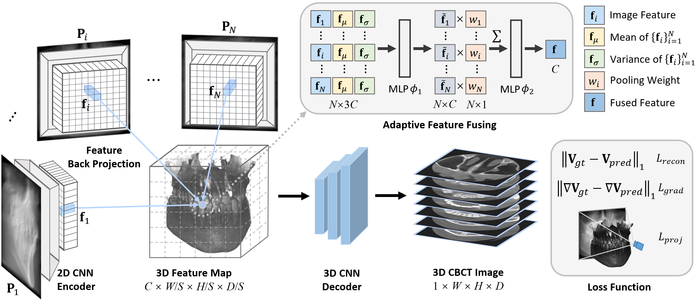

<!DOCTYPE HTML PUBLIC "-//W3C//DTD HTML 4.01 Transitional//EN">
<html>

<script src="http://www.google.com/jsapi" type="text/javascript"></script>
<script type="text/javascript">google.load("jquery", "1.3.2");</script>

<style type="text/css">
body {
    font-family: "Titillium Web", "HelveticaNeue-Light", "Helvetica Neue Light", "Helvetica Neue", Helvetica, Arial, "Lucida Grande", sans-serif;
    font-weight: 300;
    font-size: 17px;
    margin-left: auto;
    margin-right: auto;
    width: 980px;
}
h1 {
    font-weight:300;
    line-height: 1.15em;
}

h2 {
    font-size: 1.75em;
}
a:link,a:visited {
    color: #B6486F;
    text-decoration: none;
}
a:hover {
    color: #208799;
}
h1, h2, h3 {
    text-align: center;
}
h1 {
    font-size: 40px;
    font-weight: 500;
}
h2 {
    font-weight: 400;
    margin: 16px 0px 4px 0px;
}
.paper-title {
    padding: 16px 0px 16px 0px;
}
section {
    margin: 32px 0px 32px 0px;
    text-align: justify;
    clear: both;
}
.col-5 {
     width: 20%;
     float: left;
}
.col-4 {
     width: 25%;
     float: left;
}
.col-3 {
     width: 33%;
     float: left;
}
.col-2 {
     width: 50%;
     float: left;
}
.col-1 {
     width: 100%;
     float: left;
}
.row, .author-row, .affil-row {
     overflow: auto;
}
.author-row, .affil-row {
    font-size: 26px;
}
.row {
    margin: 16px 0px 16px 0px;
}
.authors {
    font-size: 26px;
}
.affil-row {
    margin-top: 16px;
}
.teaser {
    max-width: 100%;
}
.text-center {
    text-align: center;  
}
.screenshot {
    width: 256px;
    border: 1px solid #ddd;
}
.screenshot-el {
    margin-bottom: 16px;
}
hr {
    height: 1px;
    border: 0; 
    border-top: 1px solid #ddd;
    margin: 0;
}
.material-icons {
    vertical-align: -6px;
}
p {
    line-height: 1.25em;
}
.caption {
    font-size: 16px;
    /*font-style: italic;*/
    color: #666;
    text-align: center;
    margin-top: 4px;
    margin-bottom: 10px;
}
video {
    display: block;
    margin: auto;
}
figure {
    display: block;
    margin: auto;
    margin-top: 10px;
    margin-bottom: 10px;
}
#bibtex pre {
    font-size: 14px;
    background-color: #eee;
    padding: 16px;
}
.blue {
    color: #2c82c9;
    font-weight: bold;
}
.orange {
    color: #d35400;
    font-weight: bold;
}
.flex-row {
    display: flex;
    flex-flow: row wrap;
    justify-content: space-around;
    padding: 0;
    margin: 0;
    list-style: none;
}
.paper-btn {
  position: relative;
  text-align: center;

  display: inline-block;
  margin: 8px;
  padding: 8px 8px;

  border-width: 0;
  outline: none;
  border-radius: 2px;
  
  background-color: #B6486F;
  color: white !important;
  font-size: 20px;
  width: 100px;
  font-weight: 600;
}
.paper-btn-parent {
    display: flex;
    justify-content: center;
    margin: 16px 0px;
}
.paper-btn:hover {
    opacity: 0.85;
}
.container {
    margin-left: auto;
    margin-right: auto;
    padding-left: 16px;
    padding-right: 16px;
}
.venue {
    /*color: #B6486F;*/
    font-size: 30px;

}

</style>

<!-- End : Google Analytics Code -->
<script type="text/javascript" src="../js/hidebib.js"></script>
    <link href='https://fonts.googleapis.com/css?family=Titillium+Web:400,600,400italic,600italic,300,300italic' rel='stylesheet' type='text/css'>
    <head>
        <title>Geometry-Aware Attenuation Learning for Sparse-View CBCT Reconstruction</title>
        <meta property="og:description" content="Geometry-Aware Attenuation Learning for Sparse-View CBCT Reconstruction"/>
        <link href="https://fonts.googleapis.com/css2?family=Material+Icons" rel="stylesheet">
        <meta name="twitter:card" content="summary_large_image">
        <meta name="twitter:creator" content="@ArashVahdat">
        <meta name="twitter:title" content="Geometry-Aware Attenuation Learning for Sparse-View CBCT Reconstruction">
        <meta name="twitter:description" content="Geometry-Aware Attenuation Learning for Sparse-View CBCT Reconstruction">
        <meta name="twitter:image" content="">
    </head>

 <body>
<div class="container">
    <div class="paper-title">
      <h1>Geometry-Aware Attenuation Learning for Sparse-View CBCT Reconstruction</h1>
    </div>

    <div id="authors">
    	<center>
        <div class="author-row">
            <div class="col-4 text-center"><a href="https://zhentao-liu.github.io/">Zhentao Liu</a><sup>1*</sup></div>
            <div class="col-4 text-center"><a href="https://yuffish.github.io/">Yu Fang</a><sup>1*</sup></div>
            <div class="col-4 text-center"><a href="https://enigma-li.github.io/">Changjian Li</a><sup>4*</sup></div>
            <div class="col-4 text-center"><a href="http://hanwu.website/">Han Wu</a><sup>1*</sup></div>
            <div class="col-4 text-center"><a href="https://liuyuan-pal.github.io/">Yuan Liu</a><sup>5*</sup></div>
            <div class="col-3 text-center"><a href="https://idea.bme.shanghaitech.edu.cn/">Dingggang Shen</a><sup>1,2,3</sup></div>
            <div class="col-3 text-center"><a href="https://shanghaitech-impact.github.io/">Zhiming Cui</a><sup>1</sup></div>
        </div> 
        <center>
            <table align=center width=800px>
            <tr>
                <tr align=center width=800px>
                <center>
                <div class="col-1 text-center">
                    <span style="font-size:20px"><sup>1</sup>School of Biomedical Engineering & State Key Laboratory of Advanced Medical Materials and Devices, ShanghaiTech University, Shanghai, China</span>
                </div>
                <div class="col-1 text-center">
                    <span style="font-size:20px"><sup>2</sup>Shanghai United Imaging Intelligence Co., Ltd., Shanghai, China</span>
                </div>
                <div class="col-1 text-center">
                    <span style="font-size:20px"><sup>3</sup>Shanghai Clinical Research and Trial Center, Shanghai, China</span>
                </div>
                <div class="col-1 text-center">
                    <span style="font-size:20px"><sup>4</sup>School of Informatics, The University of Edinburgh, Edinburgh, UK</span>
                </div>
                <div class="col-1 text-center">
                    <span style="font-size:20px"><sup>5</sup>Department of Computer Science, The University of Hong Kong, Hong Kong, China</span>
                </div>
                </center>
                </tr>
            </tr>
            </table>
        </center>

        </center>
        <br>
        
        <div class="affil-row">
            <div class="venue text-center"><b></b></div>
        </div>
        <br>
        <div style="clear: both">
            <div class="paper-btn-parent">
            <a class="paper-btn" href="https://arxiv.org/abs/2303.14739">
                <span class="material-icons"></span> 
                 Paper
            </a>
            <a class="paper-btn" href="https://github.com/ShanghaiTech-IMPACT/Geometry-Aware-Attenuation-Learning-for-Sparse-View-CBCT-Reconstruction/">
                <span class="material-icons"></span> 
                 Code
            </a>
        </div></div>
    </div>

    <section id="abstract"/>
        <h2>Abstract</h2>
        <hr>
        <center></center>
        <p class="caption">
            CBCT scanning and reconstruction. In the CBCT scanning process, CBCT scanning (a) would generate a sequence of 2D X-ray projections (b). These projections are utilized to reconstruct 3D CBCT image (c).
        </p><p class="caption">
        <div class="flex-row">
            <p>Cone Beam Computed Tomography (CBCT) plays a vital role in clinical imaging. Traditional methods typically require hundreds of 2D X-ray projections to reconstruct a high-quality 3D CBCT image, leading to considerable radiation exposure. This has led to a growing interest in sparse-view CBCT reconstruction to reduce radiation doses. While recent advances, including deep learning and neural rendering algorithms, have made strides in this area, these methods either produce unsatisfactory results or suffer from time inefficiency of individual optimization. In this paper, we introduce a novel geometry-aware encoder-decoder framework to solve this problem. Our framework starts by encoding multi-view 2D features from various 2D X-ray projections with a 2D CNN encoder. Leveraging the geometry of CBCT scanning, it then back-projects the multi-view 2D features into the 3D space to formulate a comprehensive volumetric feature map, followed by a 3D CNN decoder to recover 3D CBCT image. Importantly, our approach respects the geometric relationship between 3D CBCT image and its 2D X-ray projections during feature back projection stage, and enjoys the prior knowledge learned from the data population. This ensures its adaptability in dealing with extremely sparse view inputs without individual training, such as scenarios with only 5 or 10 X-ray projections. Extensive evaluations on two simulated datasets and one real-world dataset demonstrate exceptional reconstruction quality and time efficiency of our method.<p>
        </div>
    </section>

    <section id="Methodology"/>
        <h2>Methodology</h2>
        <hr>
        <center></center>
    </section>

    <section id="bibtex">
        <h2>Citation</h2>
        <hr>
        <pre><code>@ARTICLE{SVCT,
          author={Liu, Zhentao and Fang, Yu and Li, Changjian and Wu, Han and Liu, Yuan and Shen, Dinggang and Cui, Zhiming},
          journal={IEEE Transactions on Medical Imaging}, 
          title={Geometry-Aware Attenuation Learning for Sparse-View CBCT Reconstruction}, 
          year={2024},
          doi={10.1109/TMI.2024.3473970}
      }
        </code></pre>
    </section>
